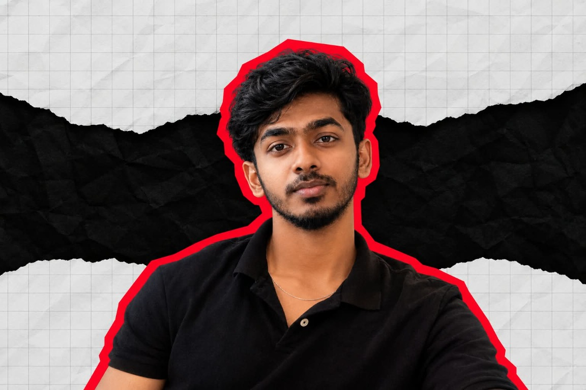

Independent practice
India / 2026
01 — Personal index
KIRTHI.
Security / Systems / Software
Code / infrastructure / risk
Practice note — 01

Portrait / pending Fig. 01Field index / 06
Six directions.
Different disciplines.
Shared curiosity.
01Security / systems
Cybersecurity
Security / systems / defense
02Flow / delivery
DevOps
Automation / infrastructure / delivery
03Play / mechanic
Game development
Interaction / worlds / mechanics
04Interface / logic
Full stack
Interfaces / APIs / systems
05Nodes / scale
Cloud
Infrastructure / distributed systems
06Pattern / signal
AI
Models / agents / intelligence